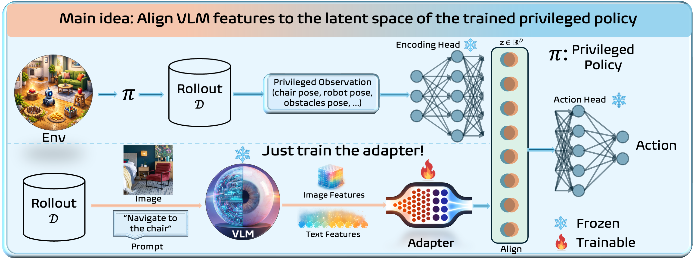
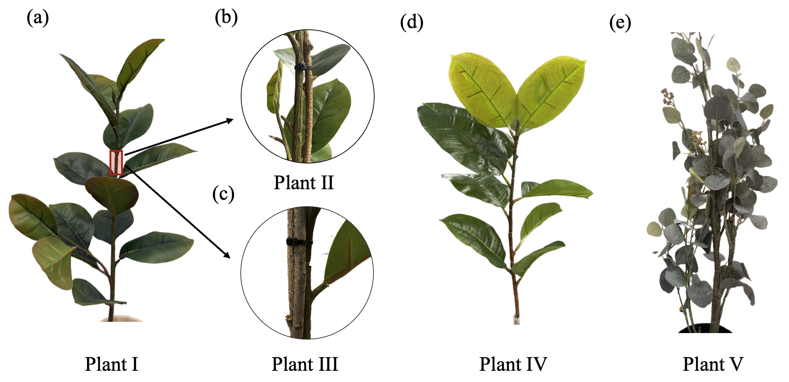
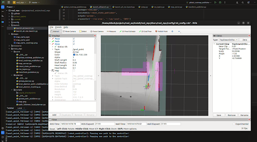

Ph.D. Researcher @ Iowa State University · Autonomous Navigation · Robot Learning · Vision-Language Models
About Me
I am a Ph.D. researcher in Mechanical Engineering at Iowa State University, working as a Graduate Research Assistant. My research focuses on reinforcement learning for robotic manipulation, robot navigation using LLMs/VLMs, and model predictive control.
I received my B.E. in Mechanical Engineering from Pulchowk Campus, IOE, Tribhuvan University (2022), and worked as an R&D Engineer at NSDeVil (2021–2024) before starting my PhD. I contribute to publications at top robotics venues (RSS, ICRA).
From mentoring ABU Robocon teams to building sim2real RL pipelines, I enjoy the full engineering stack — from mechanical design to ML research.
Featured Research
Recent work in robot learning, autonomous navigation, and perception.

Aligns sensory observations to a latent representation of an expert policy. Decouples perception from control via a lightweight adapter, enabling expert behavior reuse across different sensing modalities.

A sim2real RL framework for autonomous harvesting in occluded environments. Achieves 86.7% success rate in exposing target fruits by decoupling kinematic planning from compliant control.

MPC-based navigation stack for wheeled robots using ROS 2, implemented in Python with NUMBA acceleration. CasADi + IPOPT for optimal path generation.
Expertise